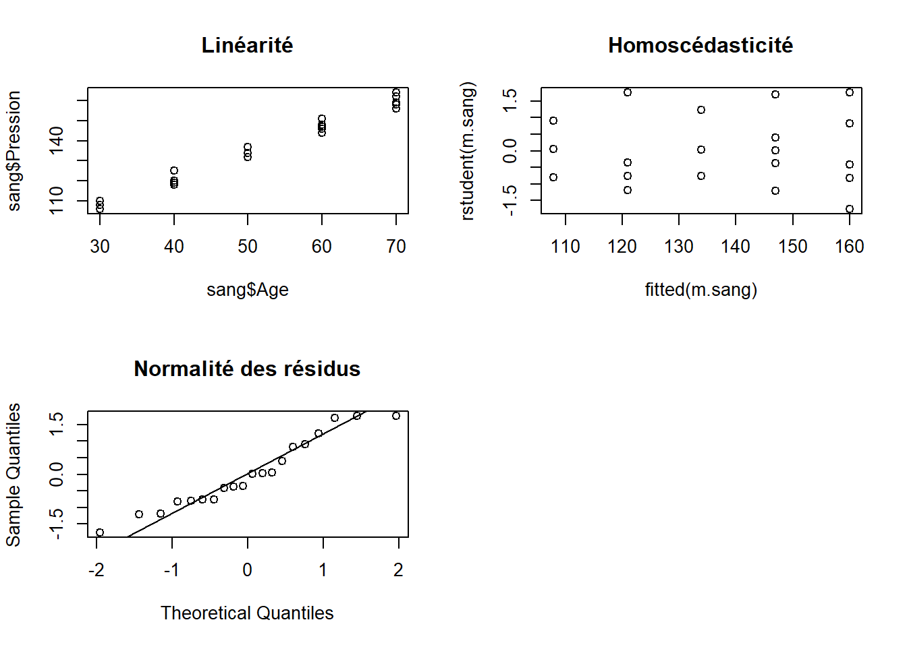
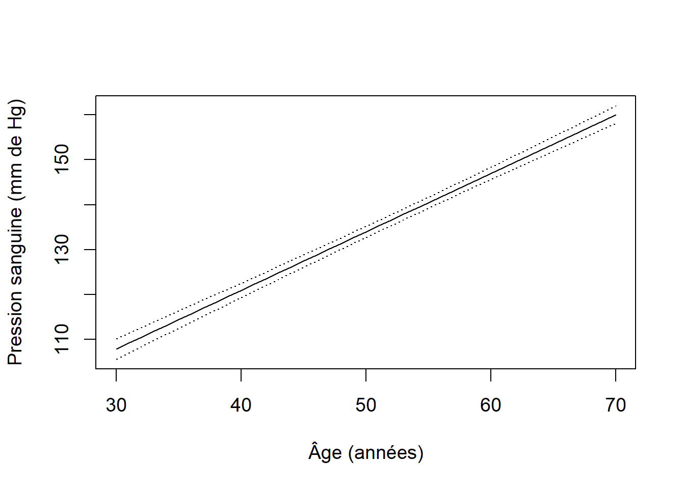

10.2 Autoévaluation
Les données peuvent être retrouvées dans le dossier Module 10.
Question 1
Importez le fichier Pression_sanguine.txt qui présente les données relatives à la pression sanguine en mm de Hg chez des patients de différents âges.
Réponse
Nous importons le jeu de données :
## Age Pression
## 1 30 108
## 2 30 110
## 3 30 106
## 4 40 125
## 5 40 120
## 6 40 118## 'data.frame': 20 obs. of 2 variables:
## $ Age : int 30 30 30 40 40 40 40 50 50 50 ...
## $ Pression: int 108 110 106 125 120 118 119 132 137 134 ...a. Effectuez une régression linéaire simple afin de déterminer l’effet de l’âge sur la pression sanguine.
Réponse
##
## Call:
## lm(formula = Pression ~ Age, data = sang)
##
## Residuals:
## Min 1Q Median 3Q Max
## -4.0050 -1.9186 -0.4421 2.0264 4.0893
##
## Coefficients:
## Estimate Std. Error t value Pr(>|t|)
## (Intercept) 68.78491 2.21607 31.04 <2e-16 ***
## Age 1.30314 0.04077 31.97 <2e-16 ***
## ---
## Signif. codes: 0 '***' 0.001 '**' 0.01 '*' 0.05 '.' 0.1 ' ' 1
##
## Residual standard error: 2.57 on 18 degrees of freedom
## Multiple R-squared: 0.9827, Adjusted R-squared: 0.9817
## F-statistic: 1022 on 1 and 18 DF, p-value: < 2.2e-16b. Vérifiez les suppositions de la régression linéaire simple. Apportez des transformations si nécessaire. La régression linéaire est-elle justifiée ici?
Réponse
Les suppositions de linéarité, d’homogénéité des variances et de normalité des résidus sont respectées (Figure 10.12). La régression est donc appropriée avec ces données.
par(mfrow = c(2, 2))
##linéarité
plot(sang$Pression ~ sang$Age,
main = "Linéarité")
##homogénéité des variances
plot(rstudent(m.sang) ~ fitted(m.sang),
main = "Homoscédasticité")
##normalité des résidus
qqnorm(rstudent(m.sang),
main = "Normalité des résidus")
qqline(rstudent(m.sang))
Figure 10.12: Diagnostics de la régression linéaire effectuée sur les données de pression sanguine en fonction de l’âge de patients.
c. Interprétez les résultats et commentez la valeur des coefficients ainsi que le pouvoir prédictif de la régression.
Réponse
##
## Call:
## lm(formula = Pression ~ Age, data = sang)
##
## Residuals:
## Min 1Q Median 3Q Max
## -4.0050 -1.9186 -0.4421 2.0264 4.0893
##
## Coefficients:
## Estimate Std. Error t value Pr(>|t|)
## (Intercept) 68.78491 2.21607 31.04 <2e-16 ***
## Age 1.30314 0.04077 31.97 <2e-16 ***
## ---
## Signif. codes: 0 '***' 0.001 '**' 0.01 '*' 0.05 '.' 0.1 ' ' 1
##
## Residual standard error: 2.57 on 18 degrees of freedom
## Multiple R-squared: 0.9827, Adjusted R-squared: 0.9817
## F-statistic: 1022 on 1 and 18 DF, p-value: < 2.2e-16d. Utilisez l’équation de régression pour prédire la pression sanguine d’un patient de 55 ans. Construisez un intervalle de confiance autour de la prédiction.
Réponse
L’équation de régression est :
\[ \hat{y}_i = 68.78 + 1.3 \cdot Age_i \\ \hat{y}_i = 68.78 + 1.3 \cdot 55 \\ \hat{y}_i = 140.46 \]
Nous pouvons calculer la valeur prédite et un intervalle de confiance autour de cette valeur :
##jeu de données à partir duquel on fait des prédictions
jeu.pred <- data.frame(Age = 55)
##on effectue la prédiction avec SE
pred <- predict(m.sang, newdata = jeu.pred, se.fit = TRUE)
##ajout à jeu.pred
jeu.pred$fit <- pred$fit
jeu.pred$se.fit <- pred$se.fit
##on calcule IC à 95%
jeu.pred$inf95 <- jeu.pred$fit +
qt(p = 0.025, df = m.sang$df.residual) * jeu.pred$se.fit
jeu.pred$sup95 <- jeu.pred$fit -
qt(p = 0.025, df = m.sang$df.residual) * jeu.pred$se.fit
jeu.pred## Age fit se.fit inf95 sup95
## 1 55 140.4579 0.5836904 139.2316 141.6841e. Présentez la droite de régression sous forme graphique. Ajoutez les limites de confiance autour de la droite.
Réponse
Calculons les valeurs prédites et leurs intervalles de confiance respectifs pour chacune des valeurs observées d’âge :
##jeu de données à partir duquel on fait des prédictions
jeu.pred <- data.frame(Age = seq(from = min(sang$Age),
to = max(sang$Age),
by = 1))
##on effectue la prédiction avec SE
pred <- predict(m.sang, newdata = jeu.pred, se.fit = TRUE)
##ajout à jeu.pred
jeu.pred$fit <- pred$fit
jeu.pred$se.fit <- pred$se.fit
##on calcule IC à 95%
jeu.pred$inf95 <- jeu.pred$fit +
qt(p = 0.025, df = m.sang$df.residual) * jeu.pred$se.fit
jeu.pred$sup95 <- jeu.pred$fit -
qt(p = 0.025, df = m.sang$df.residual) * jeu.pred$se.fitLa figure 10.13 illustre la droite de prédiction ainsi que les intervalles de confiance autour des valeurs prédites. Nous remarquons l’excellente précision dans les prédictions à partir de la régression, tel qu’indiqué par les intervalles de confiance très étroits autour des valeurs prédites.
##graphique vide
par(cex = 1.2)
plot(jeu.pred$fit ~ jeu.pred$Age, type = "n",
ylab = "Pression sanguine (mm de Hg)",
xlab = "Âge (années)",
ylim = c(min(jeu.pred$inf95), max(jeu.pred$sup95)))
##ajoute droite
lines(y = jeu.pred$fit, x = jeu.pred$Age)
##ajoute limites de confiance
lines(y = jeu.pred$inf95, x = jeu.pred$Age, lty = "dotted")
lines(y = jeu.pred$sup95, x = jeu.pred$Age, lty = "dotted")
Figure 10.13: Pression sanguine en fonction de l’âge des patients. Les pointillés représentent les limites de confiance à 95 % autour des valeurs prédites obtenues à partir de la régression linéaire.
Question 2
Dans une étude d’observation, on s’intéresse au aux taux annuels de noyade dans les grandes villes nord-américaines. Pour ce faire, nous sélectionnons aléatoirement 50 villes dans notre aire d’étude et récoltons les données auprès des autorités de ces villes. Lors de cette même étude d’observation, nous avons également récolté les taux d’homicide dans ces différentes villes.
a. Quelle analyse sera la plus approriée pour décrire la relation entre le taux de noyade et le taux d’homicide dans les grande villes nord-américaines? Justifiez votre réponse.